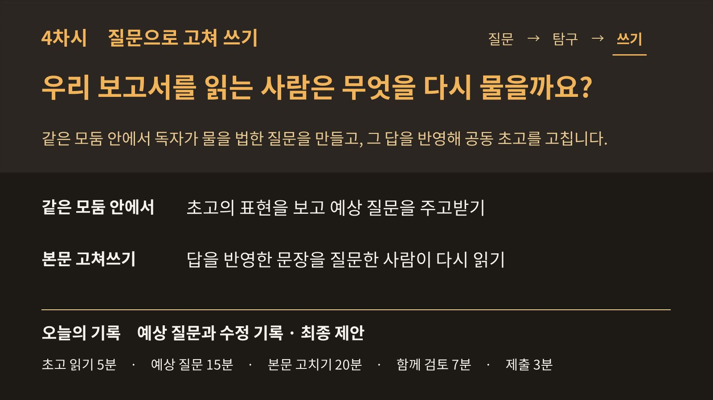
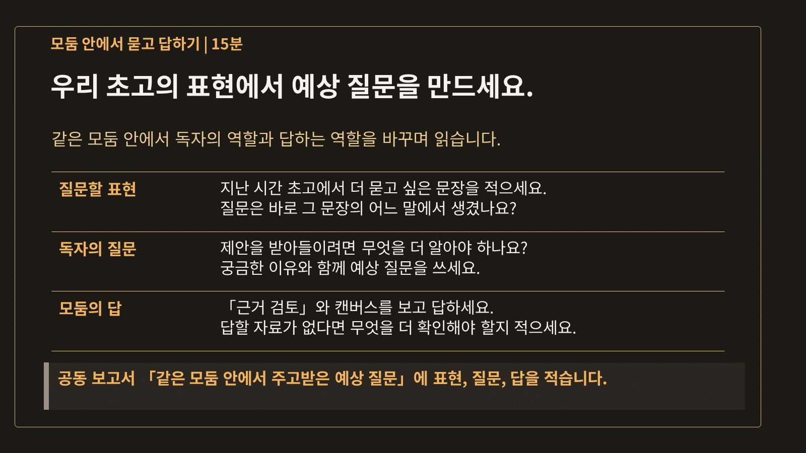
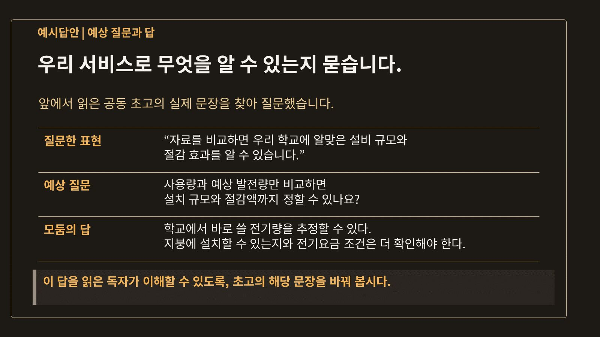
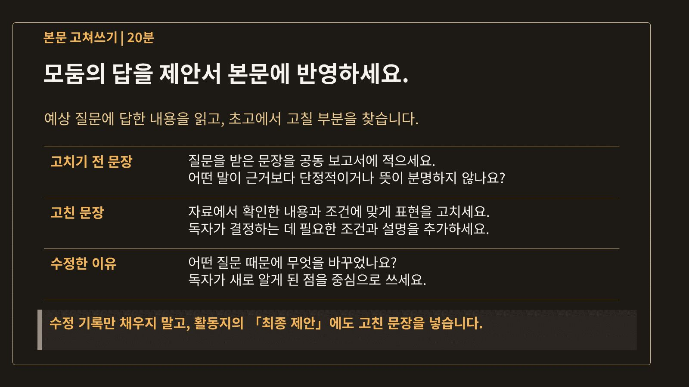
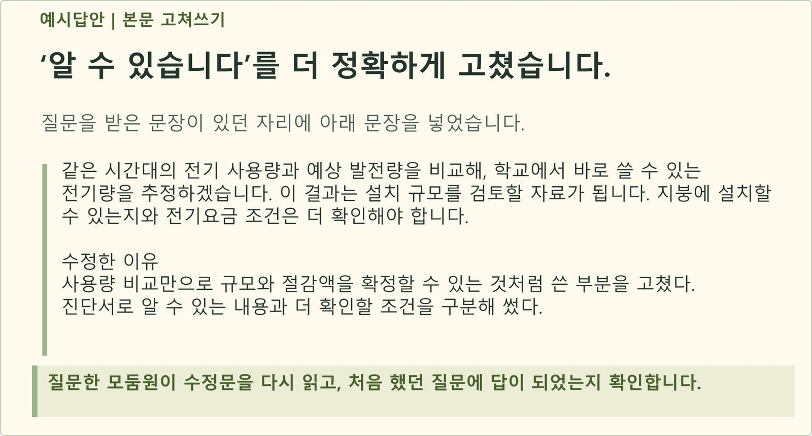
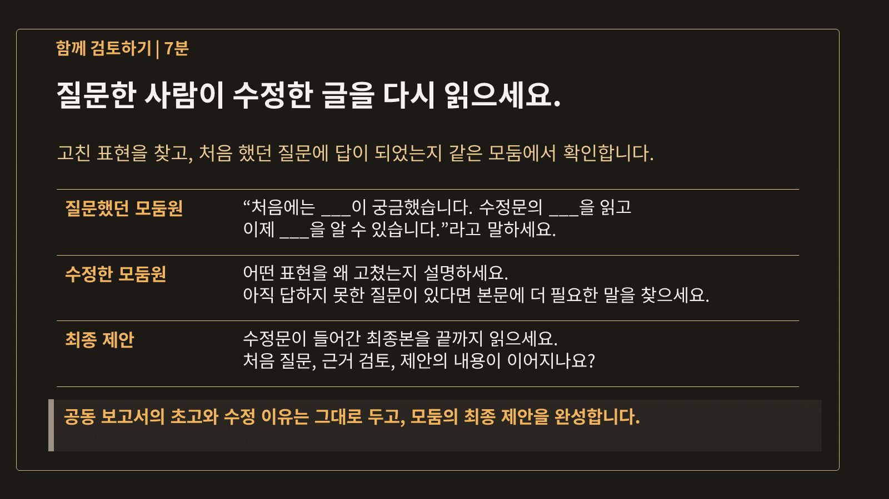
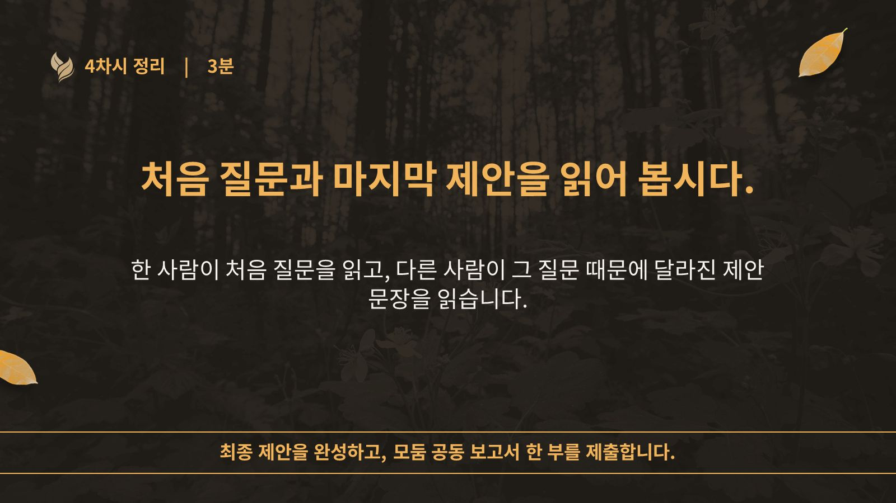

읽는 사람은 무엇을 다시 물을까요?
오늘의 목표같은 모둠에서 공동 초고에 대한 예상 질문을 만들고, 답을 검토해 제안의 근거와 표현을 고쳐요.
수업 흐름
← → 키로 단계를 넘겨요. 교사 모드를 켜면 발문과 유의점이 함께 보여요.
우리 보고서를 읽는 사람은 무엇을 다시 물을까요?
모둠이 정한 독자와 요청할 일을 확인해요. 독자가 결정을 망설일 만한 문장을 함께 찾아봅시다.
3차시 공동 초고 다시 보기 ↗
오늘의 목표
같은 모둠에서 공동 초고에 대한 예상 질문을 만들고, 답을 검토해 제안의 근거와 표현을 고쳐요.
독자 역할과 답하는 역할을 바꾸며
질문을 받은 문장을 실제로 고치기
질문한 사람이 수정문을 다시 읽기
“어느 표현 때문에 무엇이 궁금한지” 말해요
- 질문할 표현 — 지난 시간 초고에서 더 묻고 싶은 문장. 질문은 그 문장의 어느 말에서 생겼나요?
- 독자의 질문 — 제안을 받아들이려면 무엇을 더 알아야 하나요?
- 모둠의 답 — 「근거 검토」와 캔버스를 보고 답해요. 자료가 없다면 무엇을 더 확인할지 적어요.

우리 서비스로 무엇을 알 수 있는지 묻습니다
“자료를 비교하면 우리 학교에 알맞은 설비 규모와 절감 효과를 알 수 있습니다.”
예상 질문과 모둠의 답
예상 질문 사용량과 예상 발전량만 비교하면 설치 규모와 절감액까지 정할 수 있나요?
모둠의 답 학교에서 바로 쓸 전기량을 추정할 수 있다. 지붕에 설치할 수 있는지와 전기요금 조건은 더 확인해야 한다.

모둠의 답을 제안서 본문에 반영하세요
- 고치기 전 문장 — 어떤 말이 근거보다 단정적이거나 뜻이 분명하지 않나요?
- 고친 문장 — 자료에서 확인한 내용과 조건에 맞게. 독자의 결정에 필요한 조건과 설명을 추가.
- 수정한 이유 — 어떤 질문 때문에 무엇을 바꾸었나요? 독자가 새로 알게 된 점을 중심으로.

‘알 수 있습니다’를 더 정확하게 고쳤어요
고친 문장과 수정 이유
같은 시간대의 전기 사용량과 예상 발전량을 비교해, 학교에서 바로 쓸 수 있는 전기량을 추정하겠습니다. 이 결과는 설치 규모를 검토할 자료가 됩니다. 지붕에 설치할 수 있는지와 전기요금 조건은 더 확인해야 합니다.
수정한 이유 사용량 비교만으로 규모와 절감액을 확정할 수 있는 것처럼 쓴 부분을 고쳤다. 진단서로 알 수 있는 내용과 더 확인할 조건을 구분해 썼다.

아래 고쳐쓰기 장면에서 수정 전후를 움직임으로 비교할 수 있어요.
질문한 사람이 수정한 글을 다시 읽어요
“처음에는 ___이 궁금했습니다. 수정문의 ___을 읽고 이제 ___을 알 수 있습니다.”
- 수정한 모둠원 — 어떤 표현을 왜 고쳤는지 설명해요. 아직 답하지 못한 질문이 있다면 본문에 더 필요한 말을 찾아요.
- 최종 제안 — 처음 질문, 근거 검토, 제안의 내용이 이어지나요?

처음 질문과 마지막 제안을 읽어 봅시다
한 사람이 처음 질문을 읽고, 다른 사람이 그 질문 때문에 달라진 제안 문장을 읽어요. 최종 제안을 완성하고 모둠 공동 보고서 한 부를 제출해요.
제출 전에 각자 개인 칸 두 개를 한두 문장으로 써요 — 「내가 맡은 문장과 고친 이유」, 「처음 질문에서 내 생각이 어떻게 바뀌었나」.

활동지
공동 보고서 ④ 예상 질문과 수정 기록
1예상 질문 카드 뒤집기
초고의 어느 곳에 해당하는지 고르고 카드를 눌러 독자의 질문을 확인해요.
예상 질문 사용량과 예상 발전량만 비교하면 설치 규모와 절감액까지 정할 수 있나요?
수정한 이유 사용량 비교만으로 규모와 절감액을 확정할 수 있는 것처럼 쓴 부분을 고쳤다. 진단서로 알 수 있는 내용과 더 확인할 조건을 구분해 썼다.
2수정 기록과 최종 제안
여기에 쓴 내용은 이 기기의 브라우저에만 저장돼요. 차시가 끝나면 아래 「내 기록 모두 복사」로 모둠 공유 문서에 붙여 두세요.
1묻고 답하기
2고쳐 쓰고 확인하기
3최종 제안
4나의 기록 (개인)
이 차시 슬라이드
수업 PPT 39~47장(47장은 수업 후 참고 자료 목록) · 전체 47장과 PPTX·PDF 내려받기는 프로그램 페이지에 있어요.
나가기 질문 · 나의 기록
처음 질문에서 내 생각이 어떻게 바뀌었나요? 1차시의 첫인상과 지금의 판단을 견주어 써요.